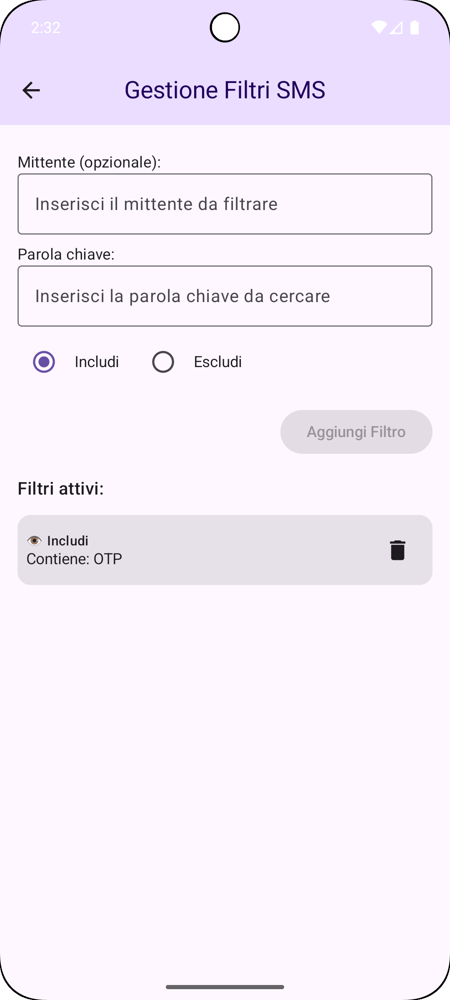
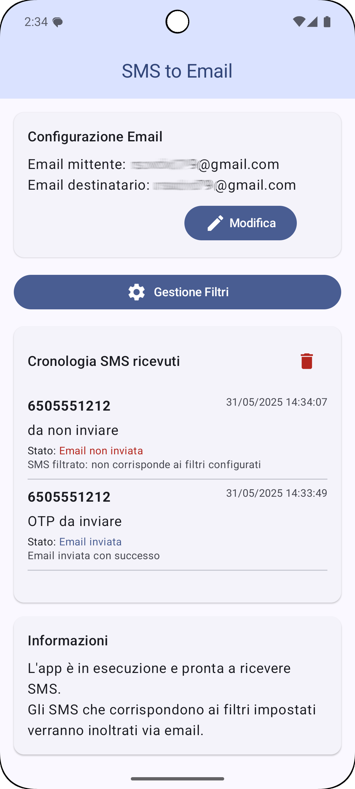

SMS TO mail
Inoltra automaticamente i tuoi SMS a email. Sistema di filtri personalizzabile.
Descrizione completa
SMS TO mail è un'applicazione potente e affidabile che converte automaticamente i messaggi SMS ricevuti in email, inviandoli direttamente alla casella di posta da te configurata. Una soluzione semplice ma efficace per non perdere mai un messaggio importante.
Caratteristiche principali
- Inoltro automatico degli SMS in arrivo verso la tua email.
- Configurazione email personalizzabile con supporto ai principali provider SMTP.
- Sistema di filtri avanzato per mittente o parole chiave.
- Protezione della privacy: nessun dato viene memorizzato su server esterni.
- Ottimizzazione delle prestazioni e basso impatto sulla batteria.
Schermate applicazione



Casi d'uso
- Accesso remoto ai tuoi SMS su computer o altri dispositivi.
- Monitoraggio aziendale di notifiche e servizi.
- Backup automatico e ricerca semplice nella casella email.
- Sincronizzazione multi-dispositivo tramite email.
- Ricezione immediata di SMS importanti come codici o avvisi bancari.
Come iniziare
- Installa l'app e concedi i permessi necessari.
- Inserisci le tue credenziali email.
- Configura eventuali filtri personalizzati.
- L'app inizierà subito a inoltrare gli SMS ricevuti.
Note di rilascio
Aggiornamento SMS to Mail - 2 giugno 2025
Novità:
• Migliorata stabilità generale dell'applicazione
• Supporto per nuovi formati SMS
• Interfaccia utente rinnovata
• Ottimizzazione delle prestazioni
• Ridotto consumo della batteria
Funzionalità esistenti:
• Inoltro automatico SMS a email
• Sistema di filtri avanzato
• Facile configurazione provider email
• Avvio automatico al riavvio dispositivo
• Ottimizzato per il consumo della batteria
Grazie per aver scelto SMS to Mail!